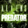
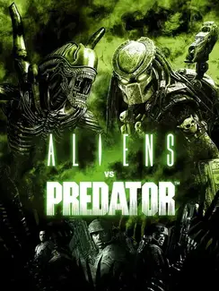

Aliens vs. Predator |
|
| Tiempo de juego | 8m 42s |
| Última actividad | 16/1/2026 10:59:32 |
| Añadido | 21/11/2025 13:40:20 |
| Modificado | 21/11/2025 13:43:57 |
| Estado de finalización | Jugado |
| Librería | Playnite |
| Fuente | |
| Plataforma | PC (Windows) |
| Fecha de lanzamiento | 16/2/2010 |
| Puntuación de la Comunidad | 70 |
| Puntuación de la Crítica | 74 |
| Puntuación de usuario | |
| Género | Shooter |
| Desarrollador | Rebellion Developments |
| Editor | Sega |
| Característica | Co-Operative Multiplayer Single Player |
| Enlaces | Steam |
| Tag | |
Una carta de amor a las dos franquicias. Y lo mejor es que no es un juego, son tres.
Desarrollado por Rebellion (los creadores del clásico original de 1999), Aliens vs. Predator (2010) es un FPS visceral que revive la guerra más icónica del cine.
Tres especies, tres jugabilidades totalmente distintas, un solo objetivo: sobrevivir en el planeta BG-386.
Con un apartado visual que destaca por su iluminación dinámica y una atmósfera opresiva, AvP 2010 es el conflicto galáctico en su estado más puro.